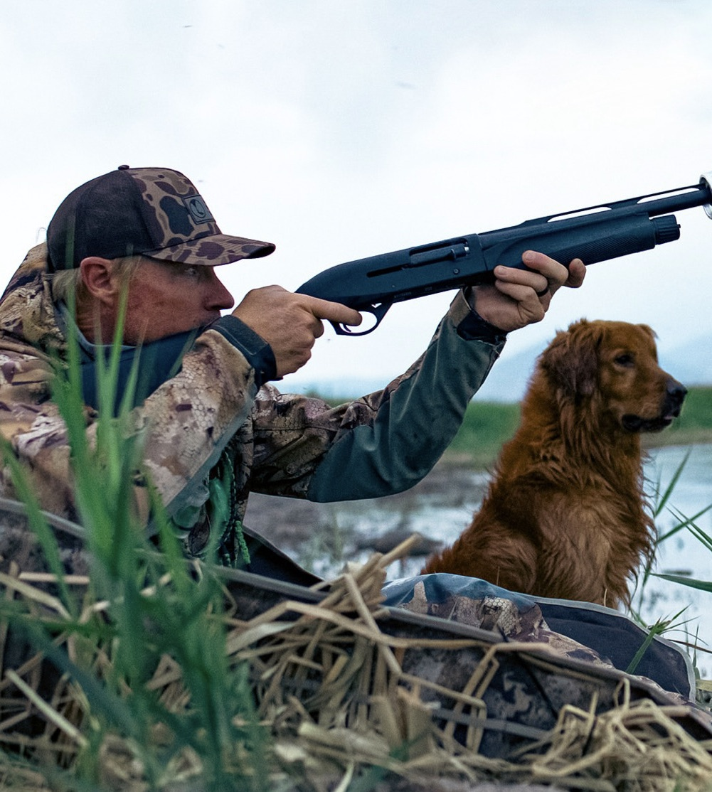
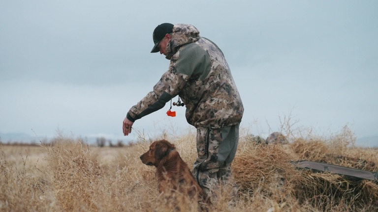

Sound conditioning for gun-shy dogs
Help your dog get calm around the sounds that shut them down.
If your dog is gun shy, you do not have to start by shooting around it again. Gun shyness can start with one bad moment. Owners sometimes get excited, shoot around a dog to “see what happens,” and create a problem that can take weeks or months to work through.
Gunshy Fix pairs calming music with progressively introduced gunfire recordings, helping the dog build comfort with the sound at home before transitioning back to birds and live field work.
$39.99


Built by a bird dog trainer
Tyce Erickson, Payson, Utah.
Tyce is a professional bird dog trainer. He runs Utah Bird Dog Training and created Gunshy Fix after the same call kept coming in: the dog would hunt, then the gun came out and it was over.
In his own program, some dogs progress until the gun gets around 30 or 40 yards — then they shut down. He built this so owners who do not have birds, extra help, or a place to work live gunfire can still start the sound work at home, then take it back to the field.
He does not guarantee a cure. If the dog has decent retrieve or bird drive, and you are patient, there is often a real chance to rewire that negative association.
The method
Music first. Gunfire last. The dog sets the pace.
- 1Start with music only. Lesson 1 has no shots. The dog should already be relaxed — crate, kennel, or a quiet room.
- 2Bring sound in under the dog’s threshold. Each lesson adds gunfire a little more. Do not skip ahead.
- 3Watch demeanor, not just whether they run. A dog glued to your leg can still have a gun issue.
- 4Then take it to the field. When the lessons are easy at volume, go outside and start live fire a long way off — we use at least 200 yards.
Two different situations
Where are you starting?
Who this is not
Not a test. Not a guarantee.
Do not “test” whether a dog is gun shy by shooting around it. That test can be the thing that creates the problem.
Tyce does not guarantee every gun-shy dog can be completely fixed. He is honest that it can be a long process. We do the work in our wheelhouse to give the dog a real chance.
Free guide
5 gun introduction mistakes that can create a gun-shy dog
Before you introduce your puppy or hunting dog to gunfire, learn the five mistakes that can turn one bad experience into a much bigger training problem.
Also available
Same method. Other sounds.
Firework Shy uses the same paced lessons, with fireworks sounds instead of gunfire.
Start in the house. Finish in the field.
Eight lessons. About 32 minutes each. Download to your phone and play through a speaker — crate, kennel, or the yard.
Start Gunshy Fix — $39.99